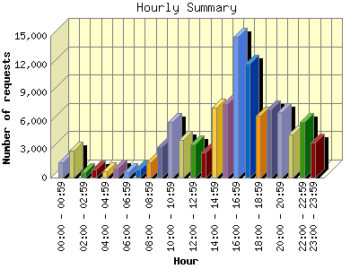
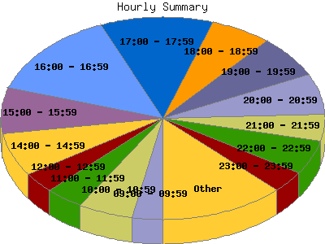

Report generated by Analog 6.0 and Report Magic 2.21
|
Web Server Statistics for "Harish Narayanan (hnarayan) - May 2007" Report generated by Analog 6.0 and Report Magic 2.21 |
The Hourly Summary identifies the level of activity broken down by each hour. Remember that one page hit can result in several server requests as the images for each page are loaded. This summary also compares the level of activity during working hours and after hours as a total for the report time frame.


| Hour | Number of requests | Number of bytes transferred | Percentage of the bytes | Percentage of the requests | |
|---|---|---|---|---|---|
| 1. | 00:00 - 00:59 | 1,623 | 51.263 MB | 3.23% | 1.52% |
| 2. | 01:00 - 01:59 | 2,887 | 45.872 MB | 2.89% | 2.70% |
| 3. | 02:00 - 02:59 | 561 | 83.398 MB | 5.25% | 0.53% |
| 4. | 03:00 - 03:59 | 889 | 20.605 MB | 1.30% | 0.83% |
| 5. | 04:00 - 04:59 | 618 | 32.739 MB | 2.06% | 0.58% |
| 6. | 05:00 - 05:59 | 976 | 36.843 MB | 2.32% | 0.91% |
| 7. | 06:00 - 06:59 | 560 | 32.101 MB | 2.02% | 0.53% |
| 8. | 07:00 - 07:59 | 887 | 68.807 MB | 4.33% | 0.83% |
| 9. | 08:00 - 08:59 | 1,637 | 69.335 MB | 4.36% | 1.53% |
| 10. | 09:00 - 09:59 | 3,236 | 72.202 MB | 4.54% | 3.03% |
| 11. | 10:00 - 10:59 | 5,854 | 73.418 MB | 4.62% | 5.48% |
| 12. | 11:00 - 11:59 | 3,992 | 66.191 MB | 4.17% | 3.74% |
| 13. | 12:00 - 12:59 | 3,525 | 48.204 MB | 3.03% | 3.30% |
| 14. | 13:00 - 13:59 | 2,633 | 55.497 MB | 3.49% | 2.47% |
| 15. | 14:00 - 14:59 | 7,382 | 166.386 MB | 10.47% | 6.92% |
| 16. | 15:00 - 15:59 | 7,808 | 60.350 MB | 3.80% | 7.31% |
| 17. | 16:00 - 16:59 | 14,936 | 152.044 MB | 9.57% | 13.99% |
| 18. | 17:00 - 17:59 | 12,029 | 76.935 MB | 4.84% | 11.27% |
| 19. | 18:00 - 18:59 | 6,574 | 90.312 MB | 5.68% | 6.16% |
| 20. | 19:00 - 19:59 | 7,183 | 68.015 MB | 4.28% | 6.73% |
| 21. | 20:00 - 20:59 | 6,915 | 49.919 MB | 3.14% | 6.48% |
| 22. | 21:00 - 21:59 | 4,526 | 55.447 MB | 3.49% | 4.24% |
| 23. | 22:00 - 22:59 | 5,858 | 52.322 MB | 3.29% | 5.49% |
| 24. | 23:00 - 23:59 | 3,663 | 61.172 MB | 3.85% | 3.43% |
| Work Hours (8:00am-4:59pm) | 51,003 | 763.626 MB | 48.05% | 47.78% | |
| After Hours (5:00pm-7:59am) | 55,749 | 825.751 MB | 51.95% | 52.22% | |
This report was generated on June 9, 2007 22:56.
Report time frame May 1, 2007 00:01 to May 31, 2007 23:59.
| Web statistics report produced by: | |
 Analog 6.0 Analog 6.0 |  Report Magic 2.21 Report Magic 2.21 |